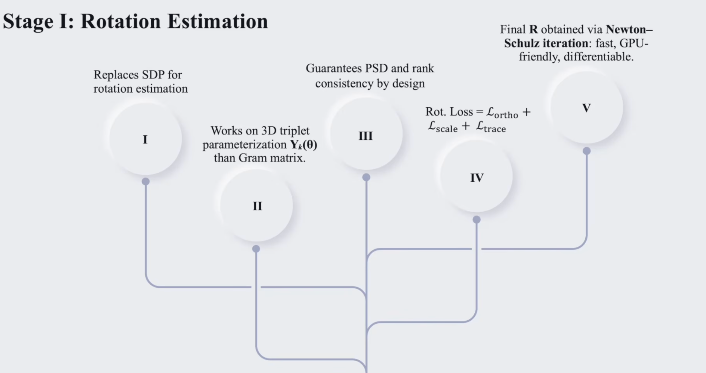
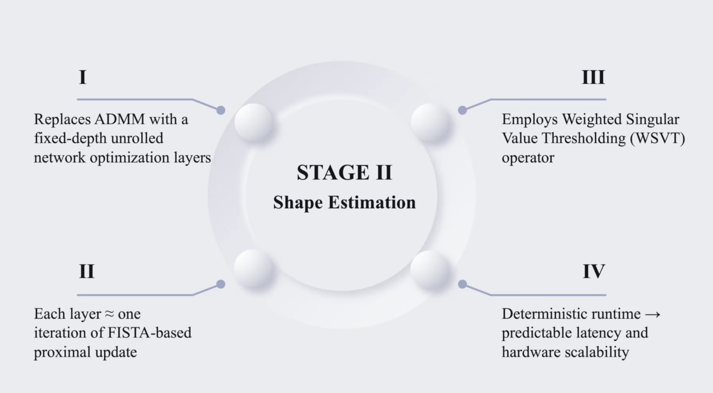
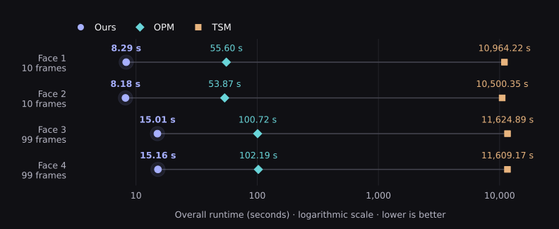
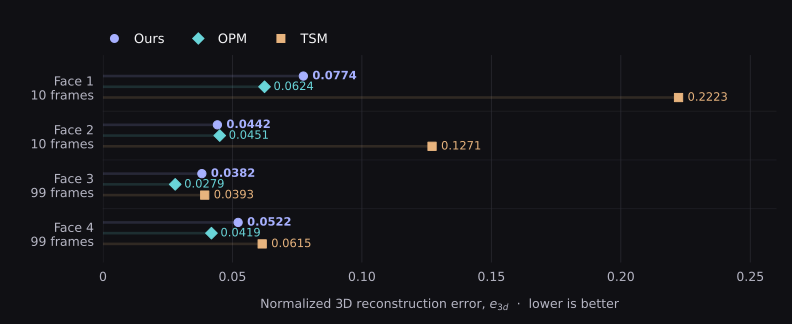
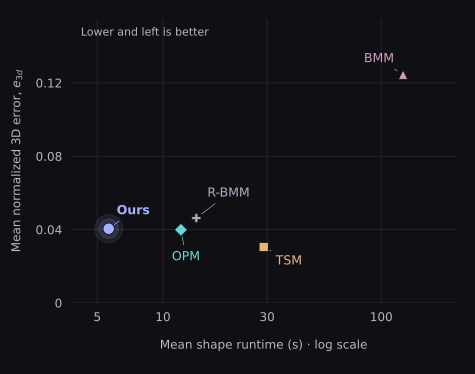
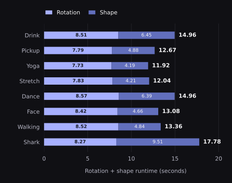
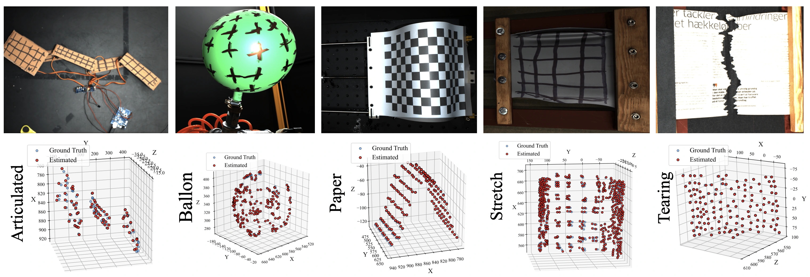
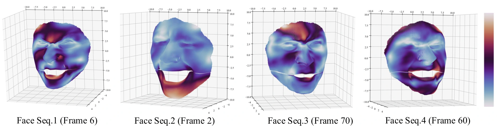
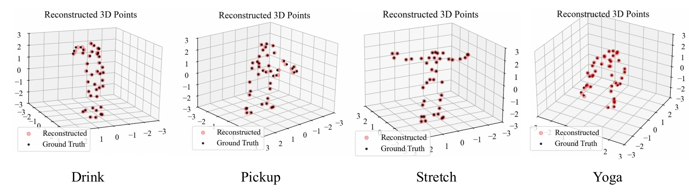
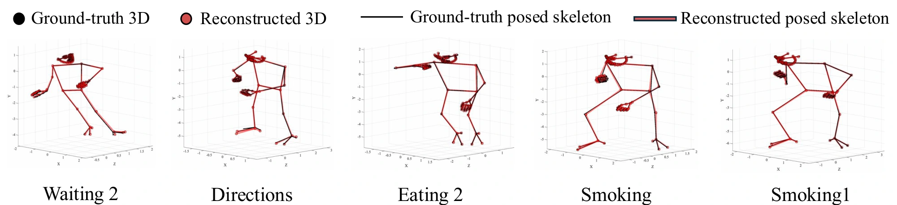

01 — CAMERA RECOVERY
No cones.
Optimize small factors directly for Euclidean correction, then project each estimated camera block to its closest row-orthonormal matrix.
Qk = YkYkTRiRiT = I2
Factor-side correctionRow-polar projection
A Fast and Scalable Solver for NRSfM
IEEE/CVF Winter Conference on Applications of Computer Vision (WACV) 2027


Recover camera motion and deforming 3D shape from 2D tracks with a fast, category-agnostic solver. No external training data.
↓per dense face sequence
Explore the dense benchmark ↗
rotation + shape across four sequences
Main paper · Table 5 ↗
complete rotation + shape recovery
Explore the stage timings ↗
Non-rigid structure from motion turns tracked 2D points into a moving 3D world.
Both the camera and the object can move. Recovering them together calls for geometric constraints and a compact model of deformation. This work retains the low-rank representation of shape-space factorization and introduces a faster solver for each of its two stages.
Small per-sequence factors recover camera rotations. A fixed sequence of reprojection and spectral-shrinkage steps recovers shape. The result is a category-agnostic solver built from accelerator-friendly linear algebra, with competitive reconstruction accuracy across sparse, dense, noisy, and missing-data benchmarks.
Non-rigid structure from motion (NRSfM) aims to recover camera motion and time-varying 3D shape from tracked 2D image measurements. Recent high-performing methods show that shape-space factorization remains highly effective for this task. These methods often use costly solvers for two key steps. First, a semidefinite programming (SDP) cone solver to perform Euclidean correction. Next, an alternating direction method of multipliers (ADMM) solver to recover the low-rank shape. These steps often scale poorly to long sequences and dense point tracks. We propose a fast and scalable NRSfM solver that avoids SDP cone solvers and ADMM dual updates.
For rotation estimation, we introduce a differentiable Euclidean correction that directly optimizes small factors for each sequence. A row-polar projection then maps each estimated camera block to the closest row-orthonormal matrix. For shape estimation, we introduce an unrolled spectral-proximal solver. It combines reprojection-gradient steps with weighted singular-value shrinkage in the reshuffled shape domain. This solver further uses FISTA-style restart and continuation. The spectral shrinkage operator itself is classical, but we embed it in a fixed differentiable solver that removes ADMM dual variables and large shape-subproblem solves, while preserving NRSfM's geometric constraints.
The proposed approach is category-agnostic, requires no external training data, and maps naturally to modern accelerator-friendly linear algebra primitives. Across sparse, dense, noisy, missing-data, and long-sequence benchmarks, our solver achieves substantial speedups with competitive reconstruction accuracy, including 7x-1000x runtime improvements on dense sequences with 28,887 tracked points.
Direct factor optimization for cameras.
Unrolled spectral updates for shape.
Optimize small factors directly for Euclidean correction, then project each estimated camera block to its closest row-orthonormal matrix.
Alternate masked reprojection-gradient steps with weighted singular-value shrinkage. FISTA-style restart and continuation stabilize the unrolled computation.
Dense tracks, motion capture, and the cost of each solver stage. Explore the measurements behind the method.
Compare total runtime and normalized 3D reconstruction error.


Across the four dense face sequences
Ratio of reported runtimes
Ratio of reported runtimes
Source: main paper, Table 5. Each sequence contains 28,887 points; sequences 1–2 have 10 frames and sequences 3–4 have 99. Download data ↗
Five methods. Mean performance over eight sequences.

Arithmetic means calculated from main paper, Table 3. Runtime covers shape recovery with rotations fixed. Download sequence data ↗
Rotation and shape recovery across eight MoCap sequences.

Source: supplement, Table 14. Drink spans 1,102 frames and 41 points; its total solve takes 14.96 seconds. Download data ↗
All plots use the paper’s reported measurements. Hardware and released implementations vary; see the experimental setup for timing conditions. Data sources and definitions ↗
From articulated objects and tearing paper to dense faces and whole-body motion. Explore original results from the supplementary material.




Watch the full reconstruction demonstration on YouTube. Poster imagery is from the paper’s benchmark figures.
Full derivations, experimental details, ablations, and additional reconstructions are available in the paper and supplement.
@inproceedings{kumar2027nocones,
title = {No Cones, No Duals: A Fast and Scalable Solver for {NRSfM}},
author = {Kumar, Suryansh},
booktitle = {Proceedings of the IEEE/CVF Winter Conference on Applications of Computer Vision (WACV)},
year = {2027}
}